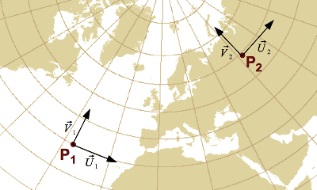

Spatial reference systems
For locating a point on Earth one can use identifiers like city name or postal address
— an approach known as spatial reference systems by identifiers —
or use numerical values valid in a given coordinate system like latitudes and longitudes
— an approach known as spatial reference systems by coordinates.
Each reference system implies approximations like
the choice of a figure of the Earth (geoid, ellipsoid, etc.) used as an approximation of Earth shape,
the choice of geometric properties (angles, distances, etc.) to be preserved when a map is shown on plane surface, and
a lost of precision when coordinates are transformed to systems using a different datum.
A very common misbelief is that one can avoid this complexity by using a single coordinate reference system
(typically WGS84) as a universal system for all data.
The next chapters will explain why the reality is not so simple.
Whether a universal reference system can suit an application needs or not depends on the desired positional accuracy
and the kind of calculations to be performed with the data.
Unless otherwise specified, Apache SIS aims to represent coordinates on Earth with an accuracy of one centimetre or better.
But the accuracy can be altered by various situations:
- Points should be inside the domain of validity as given by
ReferenceSystem.getDomainOfValidity().
- Distance measurements in a given map projection are true only is some special locations,
named for instance “standards parallels”.
- Positional accuracy is altered after coordinate transformations.
The new accuracy is described by
CoordinateOperation.getCoordinateOperationAccuracy().
- Finding the most appropriate coordinate transformation parameters require the use of a geodetic dataset like EPSG.
Declaring those parameters within the CRS (for example with a
TOWGS84 element) is often not sufficient.
“Early binding” versus “late binding” implementations
Because of the WGS84 ubiquity, it is tempting to use that system as a hub or a pivot system
for all coordinate transformations.
The use of an “universal” system as a pivot simplifies the design of coordinate transformations libraries.
For example transformations from datum A to datum B can be done by first transforming
from A to WGS84, then from WGS84 to B.
With such approach, a coordinate transformations library would only need to associate each
GeodeticDatum instance with the transformation parameters from that datum to WGS84.
This approach was encouraged in version 1 of WKT format, since that format specified a
TOWGS84[…] element (removed in WKT version 2) precisely for that purpose.
This approach is known in EPSG guidance notes as “early binding” implementations
since information about coordinate transformations are associated early in geodetic object definitions,
usually right at GeographicCRS creation time.
While EPSG acknowledges that this approach is commonly used,
this is not a recommended strategy for the following reasons:
- More than one transformation may exist from datum A to datum B,
where each transformation is designed for a different geographic area.
- Some operations are designed specifically for transformations from A to B
and do not have the same accuracy than an operation using WGS84 as an intermediate step.
- WGS84 itself has been updated many times,
which makes it a kind of moving target (admittedly slowly) for coordinate transformations libraries.
- Different systems could be used as the pivot system, for example the Galileo Reference Frame
(GTRF) created for the European GPS competitor.
Example:
the EPSG geodetic dataset defines about 50 transformations from NAD27 to NAD83.
In an early binding approach, the same geographic CRS (namely “NAD27”) in the WKT 1
format would need to be defined with a TOWGS84[-8, 160, 176] element for coordinates in USA
or with a TOWGS84[-10, 158, 187] element for coordinates in Canada.
Different parameter values exist for other regions like Cuba, so it is not possible to represent such diversity
with a single TOWGS84[…] element associated to a CRS.
But even when restricting CRS usage to the domain of validity of its single TOWGS84[…] element,
those transformations are still approximative with a 10 metres accuracy in the USA case.
More accurate transformations exist in the form of NADCON grid shift files,
but those transformations are from NAD27 to NAD83 (which move together on the same continental plate),
not to WGS84 (which move independently).
The difference was often ignored when NAD83 and WGS84 were considered as practically equivalent,
but that assumption is subject to more caution today.
EPSG rather recommends the use of “late binding” approach,
in which coordinate transformation methods and parameters are defined for
“A to B” pairs of systems (eventually completed with domain of validity)
rather than associated to standalone datums.
Apache SIS is a “late binding” implementation,
while some reminiscences of “early binding” approach still exist in the form of the
DefaultGeodeticDatum.getBursaWolfParameters() property.
The later is used only if SIS fails to apply the late binding approach for given reference systems.
The sis-referencing module provides a set of classes implementing
different specializations of the ReferenceSystem interface, together with required components.
Those implementations store spatial reference system descriptions, together with metadata like their domain of validity.
However those objects do not perform any operation on coordinate values.
Coordinates conversions or transformations are performed by another family of types,
with CoordinateOperation as the root interface.
Those types will be discussed in another section.
Components of a reference system by coordinates
Spatial reference systems by coordinates provide necessary information for mapping numerical coordinate values
to real-world locations. In Apache SIS, most information is contained (directly or indirectly) in
classes with a name ending in CRS, the abbreviation of Coordinate Reference System.
Those objects contain:
- A datum, which specifies among other things which ellipsoid to use as an Earth shape approximation.
- A description for each axis: name, direction, units of measurement, range of values.
- Sometime a list of parameters, especially when using map projections.
Those systems are described by the ISO 19111 standard (Referencing by Coordinates),
which replaces for most parts the older OGC 01-009 standard (Coordinate Transformation Services).
Those standards are completed by two other standards defining exchange formats:
ISO 19136 and 19162 respectively for the
Geographic Markup Language (GML) — a XML format which is quite detailed but verbose —
and the Well-Known Text (WKT) — a text format easier to read by humans.
Geoid et ellipsoid
Since the real topographic surface is difficult to represent mathematically, it is not used directly.
A slightly more convenient surface is the geoid,
a surface where the gravitational field has the same value everywhere (an equipotential surface).
This surface is perpendicular to the direction of a plumb line at all points.
The geoid surface would be equivalent to the mean sea level if all oceans where at rest,
without winds or permanent currents like the Gulf Stream.
While much smoother than topographic surface, the geoid surface still have hollows and bumps
caused by the uneven distribution of mass inside Earth.
For more convenient mathematical operations, the geoid surface is approximated by an ellipsoid.
This “figure of Earth” is represented in GeoAPI by the Ellipsoid interface,
a fundamental component in coordinate reference systems of kind GeographicCRS and ProjectedCRS.
Tenth of ellipsoids are commonly used for datum definitions.
Some of them provide a very good approximation for a particular geographic area
at the expense of the rest of the world for which the datum was not designed.
Other datums are compromises applicable to the whole world.
Example:
the EPSG geodetic dataset defines among others the “WGS 84”, “Clarke 1866”, “Clarke 1880”,
“GRS 1980” and “GRS 1980 Authalic Sphere” (a sphere of same surface than the GRS 1980 ellipsoid).
Ellipsoids may be used in various places of the world or may be defined for a very specific region.
For example in USA at the beginning of XXth century,
the Michigan state used an ellipsoid based on the “Clarke 1866” ellipsoid but with axis lengths expanded by 800 feet.
This modification aimed to take in account the average state height above mean sea level.
Geodetic datum
For defining a geodetic system in a country, a national authority selects an ellipsoid matching closely the country surface.
Differences between that ellipsoid and the geoid’s hollows and bumps are usually less than 100 metres.
Parameters that relate an Ellipsoid to the Earth surface (for example the position of ellipsoid center)
are represented by instances of GeodeticDatum.
Many GeodeticDatum definitions can use the same Ellipsoid,
but with different orientations or center positions.
Before the satellite era, geodetic measurements were performed exclusively from Earth surface.
Consequently, two islands or continents not in range of sight from each other were not geodetically related.
So the North American Datum 1983 (NAD83) and the European Datum 1950 (ED50)
are independent: their ellipsoids have different sizes and are centered at a different positions.
The same geographic coordinate will map different locations on Earth depending on whether the coordinate
uses one reference system or the other.
The GPS invention implied the creation of a
world geodetic system named WGS84.
The ellipsoid is then unique and centered at the Earth gravity center.
GPS provides at any moment the receptor absolute position on that world geodetic system.
But since WGS84 is a world-wide system, it may differs significantly from local systems.
For example the difference between WGS84 and the European system ED50 is about 150 metres,
and the average difference between WGS84 and the Réunion 1947 system is 1.5 kilometres.
Consequently we shall not blindly use GPS coordinates on a map,
as transformations to the local system may be required.
Those transformations are represented in GeoAPI by instances of the Transformation interface.
The WGS84 ubiquity tends to reduce the need for Transformation operations with recent data,
but does not eliminate it.
The Earth moves under the effect of plate tectonic and new systems are defined every years for taking that fact in account.
For example while NAD83 was originally defined as practically equivalent to WGS84,
there is now (as of 2016) a 1.5 metres difference.
The Japanese Geodetic Datum 2000 was also defined as practically equivalent to WGS84,
but the Japanese Geodetic Datum 2011 now differs.
Even the WGS84 datum, which was a terrestrial model realization at a specific time,
got revisions because of improvements in instruments accuracy.
Today, at least six WGS84 versions exist.
Furthermore many borders were legally defined in legacy datums, for example NAD27 in USA.
Updating data to the new datum would imply transforming some straight lines or simple geometric shapes
into more irregular shapes, if the shapes are large enough.
Coordinate systems
TODO
Axis order
The axis order is specified by the authority (typically a national agency) defining the Coordinate Reference System (CRS).
The order depends on the CRS type and the country defining the CRS.
In the case of geographic CRS, the (latitude, longitude) axis order is widely used by geographers and pilots for centuries.
However software developers tend to consistently use the (x, y) order for every kind of CRS.
Those different practices resulted in contradictory definitions of axis order for almost every CRS of kind GeographicCRS,
for some ProjectedCRS in the South hemisphere (South Africa, Australia, etc.) and for some polar projections among others.
Recent OGC standards mandate the use of axis order as defined by the authority.
Oldest OGC standards used the (x, y) axis order instead, ignoring any authority specification.
Many softwares still use the old (x, y) axis order,
maybe because such uniformization makes CRS implementation and usage apparently easier.
Apache SIS supports both conventions with the following approach:
by default, SIS creates CRS with axis order as defined by the authority.
Those CRS are created by calls to the CRS.forCode(String) method
and the actual axis order can be verified after the CRS creation with System.out.println(crs).
But if (x, y) axis order is wanted for compatibility with older OGC specifications or other softwares,
then CRS forced to longitude first axis order can be created by a call to the following method:
CoordinateReferenceSystem crs = …; // CRS obtained by any means.
crs = AbstractCRS.castOrCopy(crs).forConvention(AxesConvention.RIGHT_HANDED)
Among the legacy OGC standards that used the non-conform axis order,
an influent one is version 1 of the Well Known Text (WKT) format specification.
According that widely-used format, WKT 1 definitions without explicit AXIS[…] elements
shall default to (longitude, latitude) or (x, y) axis order.
In version 2 of WKT format, AXIS[…] elements are no longer optional
and should contain an explicit ORDER[…] sub-element for making the intended order yet more obvious.
But if AXIS[…] elements are nevertheless missing in a WKT 2 definition,
Apache SIS defaults to (latitude, longitude) order.
So in summary:
- Default WKT 1 axis order of geographic CRS is (longitude, latitude) as mandated by OGC 01-009 specification.
- Default WKT 2 axis order of geographic CRS is (latitude, longitude),
but this is SIS-specific as ISO 19162 does not mention default axis order.
To avoid ambiguities, users are encouraged to always provide explicit AXIS[…] elements in their WKT.
The WKT format will be presented in more details in the next sections.
Geographic reference systems
TODO
Well-Known Text format
TODO
Map projections
Map projections represent a curved surface (the Earth) on a plane surface (a map or a computer screen)
with some control over deformations: one can preserve either the angles or the areas, but not both in same time.
The geometric properties to preserve depend on the feature to represent and the work to do on that feature.
For example countries elongated along the East-West axis often use a Lambert projection,
while countries elongated along the North-South axis prefer a Transverse Mercator projection.
TODO
Well-Known Text format
TODO
Vertical and temporal dimensions
TODO
Well-Known Text format
TODO
Fetching a spatial reference system
TODO
Looking CRS defined by authorities
TODO
Reading definitions in GML or WKT format
TODO
Constructing programmatically
TODO
Adding new CRS definitions
TODO
Coordinate operations
Given a source coordinate reference system (CRS) in which existing coordinate values are expressed,
and a target coordinate reference system in which coordinate values are desired,
Apache SIS can provide a coordinate operation performing the conversion or transformation work.
The search for coordinate operations may use a third argument, optional but recommended,
which is the geographic area of the data to transform.
That later argument is recommended because coordinate operations are often valid only in a some geographic area
(typically a particular country or state), and many transformations may exist
for the same pair of source and target CRS but different domain of validity.
Different coordinate operations may also be different compromises between accuracy and their domain of validity,
and specifying a smaller area of interest may allow Apache SIS to select a more accurate operation.
Example:
the EPSG geodetic dataset (as of version 7.9) defines 77 coordinate operations from the
North American Datum 1927 (EPSG:4267) coordinate reference system to the
World Geodetic System 1984 (EPSG:4326) CRS.
There is one operation valid only for coordinate transformations in Québec,
another operation valid for coordinate transformations in Texas west of 100°W,
another operation for the same state but east of 100°W, etc.
If the user did not specified any geographic area of interest,
then Apache SIS defaults on the coordinate operation which is valid in the largest area.
In this example, the “largest area” criterion results in the selection of a coordinate operation valid for Canada,
not USA.
The easiest way to obtain a coordinate operation from above-cited information
is to use the org.apache.sis.referencing.CRS convenience class:
CoordinateOperation cop = CRS.findOperation(sourceCRS, targetCRS, areaOfInterest);
Among the information provided by CoordinateOperation object, the following are of special interest:
- The domain of validity, either as a textual description (e.g. “Canada – onshore and offshore”)
or with the coordinates of a geographic bounding box.
- The positional accuracy, which may be anything from 1 centimetre to a few kilometres.
- The coordinate operation subtype. Among them, two sub-types provide the same functionalities but with a significant conceptual difference:
-
Coordinate conversions are fully determined by mathematical formulas.
Those conversions would have an infinite precision if it was not for the unavoidable rounding errors
inherent to floating-point calculations.
Map projections are in this category.
-
Coordinate transformations are defined empirically.
They often have errors of a few metres which are not caused by limitation in computer accuracy.
Those errors exist because transformations are only approximations of a more complex reality.
Datum shifts from NAD27 to NAD83
are in this category.
If the coordinate operation is an instance of Transformation,
then the instance selected by SIS may be one among many possibilities depending on the area of interest.
Furthermore its accuracy is certainly less than the centimetric accuracy that we can expect from a Conversion.
Consequently verifying the domain of validity and the positional accuracy declared in the transformation metadata is of particular importance.
The CoordinateOperation object introduced in above section provides high-level informations
(source and target CRS, domain of validity, positional accuracy, operation parameters, etc).
The actual mathematical work is performed by a separated object obtained by a call to CoordinateOperation.getMathTransform().
At the difference of CoordinateOperation instances, MathTransform instances do not carry any metadata.
They are kind of black box which know nothing about the source and target CRS
(actually the same MathTransform can be used for different pairs of CRS if the mathematical work is the same), domain or accuracy.
Furthermore MathTransform may be implemented in a very different way than what CoordinateOperation said.
In particular many conceptually different coordinate operations (e.g. longitude rotations,
change of units of measurement, conversions between two Mercator projections on the same datum, etc.)
are implemented by MathTransform as affine transforms and concatenated for efficiency,
even if CoordinateOperation reports them as a chain of Mercator and other operations.
The “conceptual versus real chain of coordinate operations” section explains the differences in more details.
The following Java code performs a map projection from geographic coordinates on the World Geodetic System 1984 (WGS84) datum
coordinates in the WGS 84 / UTM zone 33N coordinate reference system.
In order to make the example a little bit simpler, this code uses predefined constants given by the CommonCRS convenience class.
But more advanced applications will typically use EPSG codes instead.
Note that all geographic coordinates below express latitude before longitude.
import org.opengis.geometry.DirectPosition;
import org.opengis.referencing.crs.CoordinateReferenceSystem;
import org.opengis.referencing.operation.CoordinateOperation;
import org.opengis.referencing.operation.TransformException;
import org.opengis.util.FactoryException;
import org.apache.sis.referencing.CRS;
import org.apache.sis.referencing.CommonCRS;
import org.apache.sis.geometry.DirectPosition2D;
public class MyApp {
public static void main(String[] args) throws FactoryException, TransformException {
CoordinateReferenceSystem sourceCRS = CommonCRS.WGS84.geographic();
CoordinateReferenceSystem targetCRS = CommonCRS.WGS84.UTM(40, 14); // Get whatever zone is valid for 14°E.
CoordinateOperation operation = CRS.findOperation(sourceCRS, targetCRS, null);
// The above lines are costly and should be performed only once before to project many points.
// In this example, the operation that we got is valid for coordinates in geographic area from
// 12°E to 18°E (UTM zone 33) and 0°N to 84°N.
DirectPosition ptSrc = new DirectPosition2D(40, 14); // 40°N 14°E
DirectPosition ptDst = operation.getMathTransform().transform(ptSrc, null);
System.out.println("Source: " + ptSrc);
System.out.println("Target: " + ptDst);
}
}
Previous section shows how to project a coordinate from one reference system to another one.
There is another, less known, operation which does not compute the projected coordinates of a given point,
but instead the derivative of the projection function at that point.
This operation was defined in an older Open Geospatial specification,
OGC 01-009, now considered obsolete but still useful.
Let P be a map projection converting degrees of latitude and longitude (φ, λ)
into projected coordinates (x, y) in metres.
The formula below represents the map projection result as a column matrix
(reason will become clearer soon):
| Equation |
Java code |
|
|
DirectPosition geographic = new DirectPosition2D(φ, λ);
DirectPosition projected = P.transform(geographic, null);
double x = projected.getOrdinate(0);
double y = projected.getOrdinate(1);
|
The map projection partial derivate at this point can be represented by a Jacobian matrix:
| Equation |
Java code |
|
|
DirectPosition geographic = new DirectPosition2D(φ, λ);
Matrix jacobian = P.derivative(geographic);
double dx_dλ = jacobian.getElement(0,1);
double dy_dφ = jacobian.getElement(1,0);
|
Remaining equations in this section will abridge
∂x(λ, φ) as ∂x and
∂y(λ, φ) as ∂y,
but reader should keep in mind that each of those derivative values depends on the (λ, φ) coordinate given at Jacobian matrix calculation time.
The first matrix column tells us that if we apply a small displacement of ∂φ degrees of latitude from the (φ, λ) position,
— in other words if we move at the (φ + ∂φ, λ) geographic position —
then the projected coordinate will be displaced by (∂x, ∂λ) metres
— in other words it will become (x + ∂x, y + ∂λ).
Similarly the last matrix column gives us the displacement that happen on the projected coordinate
if we apply a small displacement of ∂λ degrees of longitude on the source geographic coordinate.
We can visualize such displacements in a figure like below.
This figure shows the derivative at two points, P1 and P2,
for emphasing that the result change for every points.
In that figure, vectors U et V stand for the first and second column respectively
in the Jacobian matrices.
|  |
where vectors are related to the matrix by:
|
TODO
Transform derivatives applied to envelopes
TODO
| Envelope before projection |
Geometric shape after projection |
 |
 |
TODO

|
Legend:
- Blue: the geometric shape of the envelope after projection.
This is the shape from which to get a new envelope.
- Red (with hash): The
y = C₀ + C₁λ + C₂λ² + C₃λ³ approximation.
- Green (dashed line): Position λm of approximation minimum, obtained by resolving
0 = C₁ + 2C₂λm + 3C₃λm².
The same cubic line can have two minimums.
|
TODO
Transform derivatives applied to rasters
TODO
| Source image |
Destination image |
 |
TODO
 |
Legend:
- Blue dots: first iteration (9 points).
- Green dots: second iteration (25 points, including 16 news).
- Red dots: third iteration (81 points, including 56 news).
Continuing…
- Forth iteration: 289 points, including 208 news.
- Fifth iteration: 1089 points, including 800 news.
- Sixth iteration: 4225 points, including 3136 news.
- …
|
TODO

TODO
Getting the derivative at a point
TODO
Example:
AbstractMathTransform projection = ...; // An Apache SIS map projection.
double[] sourcePoint = {longitude, latitude}; // The geographic coordinate to project.
double[] targetPoint = new double[2]; // Where to store the projection result.
Matrix derivative = projection.transform(sourcePoint, 0, targetPoint, 0, true);
TODO
@Override
public Matrix derivative(DirectPosition p) throws TransformException {
Matrix jac = inverse().derivative(transform(p));
return Matrices.inverse(jac);
}
Conceptual versus real chain of coordinate operations
Coordinate operations may include many steps, each with their own set of parameters.
For example transformations from one datum (e.g. NAD27) to another datum (e.g. WGS84)
can be approximated by an affine transform (translation, rotation and scale) applied on the geocentric coordinates.
This implies that the coordinates must be converted from geographic to geocentric domain before the affine transform,
then back to geographic domain after the affine transform.
The result is a three-steps process illustrated in the “Conceptual chain of operations” column of the example below.
However because that operation chain is very common, the EPSG geodetic dataset provides a shortcut
named “Geocentric translation in geographic domain”.
Using this operation, the conversion steps between geographic and geocentric CRS are implicit.
Consequently the datum shifts as specified by EPSG appears as if it was a single operation,
but this is not the real operation executed by Apache SIS.
Example:
transformation of geographic coordinates from NAD27 to WGS84 in Canada
can be approximated by the EPSG:1172 coordinate operation.
This single EPSG operation is actually a chain of three operations in which two steps are implicit.
The operation as specified by EPSG is shown in the first column below.
The same operation with the two hidden steps made explicit is shown in the second column.
The last column shows the same operation as implemented by Apache SIS under the hood,
which contains additional operations discussed below.
For all columns, input coordinates of the first step and output coordinates of the last step
are (latitude, longitude) coordinates in degrees.
Operation specified by EPSG:
- Geocentric translation in geographic domain
- X-axis translation = -10 m
- Y-axis translation = 158 m
- Z-axis translation = 187 m
Conversions between geographic and geocentric domains are implicit.
The semi-major and semi-minor axis lengths required for those conversions
are inferred from the source and target datum.
Conceptual chain of operations:
- Geographic to geocentric conversion
- Source semi-major = 6378206.4 m
- Source semi-minor = 6356583.8 m
- Geocentric translation
- X-axis translation = -10 m
- Y-axis translation = 158 m
- Z-axis translation = 187 m
- Geocentric to geographic conversion
- Target semi-major = 6378137.0 m
- Target semi-minor ≈ 6356752.3 m
Axis order and units are implicitly defined by the source and target
CRS.
It is implementation responsibility to perform any needed unit conversions and/or axis swapping.
Operations actually performed by Apache SIS:
- Affine parametric conversion
- Scale factors (λ and φ) = 0
- Shear factors (λ and φ) = π/180
- Ellipsoid (radians domain) to centric conversion
- Affine parametric transformation
- Scale factors (X, Y and Z) ≈ 1.00001088
- X-axis translation ≈ -1.568 E-6
- Y-axis translation ≈ 24.772 E-6
- Z-axis translation ≈ 29.319 E-6
- Centric to ellipsoid (radians domain) conversion
- Affine parametric conversion
- Scale factors (λ and φ) = 0
- Shear factors (λ and φ) = 180/π
The operation chain actually performed by Apache SIS is very different than the conceptual operation chain
because the coordinate systems are not the same.
Except for the first and last ones, all Apache SIS steps work on right-handed coordinate systems
(as opposed to the left-handed coordinate system when latitude is before longitude),
with angular units in radians (instead than degrees) and
linear units relative to an ellipsoid of semi-major axis length of 1 (instead than Earth’s size).
Working in those coordinate systems requires additional steps for unit conversions and axes swapping
at the beginning and at the end of the chain.
Apache SIS uses affine parametric conversions for this purpose,
which allow to combine axes swapping and unit conversions in a single step
(see affine transform for more information).
The reason why Apache SIS splits conceptual operations in such fine-grained operations
is to allow more efficient concatenations of operation steps.
This approach often allows cancellation of two consecutive affine transforms,
for example a conversion from radians to degrees (e.g. after a geocentric to ellipsoid conversion)
immediately followed by a conversion from degrees to radians (e.g. before a map projection).
Another example is the Affine parametric transformation step above,
which combines both the geocentric translation step
and a scale factor implied by the ellipsoid change.
All those operation chains can be viewed in Well Known Text (WKT) or pseudo-WKT format.
The simplest operation chain, as specified by the authority, is given directly by the
String representation of the CoordinateOperation instance.
This WKT 2 representation contains not only a description of operations with their parameter values,
but also additional information about the context in which the operation applies (the source and target CRS)
together with some metadata like the accuracy and domain of validity.
Some operation steps and parameters may be omitted if they can be inferred from the context.
Example:
the WKT 2 representation on the right is for the same coordinate operation than the one used in previous example.
This representation can be obtained by a call to System.out.println(cop)
where cop is a CoordinateOperation instance.
Some characteristics of this representation are:
The SourceCRS and TargetCRS elements determine axis order and units.
For this reason, axis swapping and unit conversions do not need to be represented in this WKT.
The “Geocentric translation in geographic domain” operation implies conversions between geographic and geocentric coordinate reference systems.
Ellipsoid semi-axis lengths are inferred from above SourceCRS and TargetCRS elements,
so they do not need to be specified in this WKT.
The operation accuracy (20 metres) is much greater than the numerical floating-point precision.
This kind of metadata could hardly be guessed from the mathematical function alone.
CoordinateOperation["NAD27 to WGS 84 (3)",
SourceCRS[full CRS definition required here but omitted for brevity],
TargetCRS[full CRS definition required here but omitted for brevity],
Method["Geocentric translations (geog2D domain)"],
Parameter["X-axis translation", -10.0, Unit["metre", 1]],
Parameter["Y-axis translation", 158.0, Unit["metre", 1]],
Parameter["Z-axis translation", 187.0, Unit["metre", 1]],
OperationAccuracy[20.0],
Area["Canada - onshore and offshore"],
BBox[40.04, -141.01, 86.46, -47.74],
Id["EPSG", 1172, "8.9"]]
An operation chain closer to what Apache SIS really performs is given by the
String representation of the MathTransform instance.
In this WKT 1 representation, contextual information and metadata are lost;
a MathTransform is like a mathematical function with no knowledge about the meaning of the coordinates on which it operates.
Since contextual information are lost, implicit operations and parameters become explicit.
This representation is useful for debugging since any axis swapping operation (for example) become visible.
Apache SIS constructs this representation from the data structure in memory,
but convert them in a more convenient form for human, for example by converting radians to degrees.
Example:
the WKT 1 representation on the right is for the same coordinate operation than the one used in previous example.
This representation can be obtained by a call to System.out.println(cop.getMathTransform())
where cop is a CoordinateOperation instance.
Some characteristics of this representation are:
Since there is not anymore (on intend) any information about source and target CRS,
axis swapping (if needed) and unit conversions must be performed explicitly.
This is the task of the first and last affine operations in this WKT.
The “Geocentric translation” operation is not anymore applied in the geographic domain, but in the geocentric domain.
Consequently conversions between geographic and geocentric coordinate reference systems must be made explicit.
Those explicit steps are also necessary for specifying the ellipsoid semi-axis lengths,
since they can not anymore by inferred for source and target CRS.
Conversions between geographic and geocentric coordinates are three-dimensional.
Consequently operations for increasing and reducing the number of dimensions are inserted.
By default the ellipsoidal height before conversion is set to zero.
Concat_MT[
Param_MT["Affine parametric transformation",
Parameter[parameters performing axis swapping omitted for brevity]],
Inverse_MT[Param_MT["Geographic3D to 2D conversion"]],
Param_MT["Geographic/geocentric conversions",
Parameter["semi_major", 6378206.4],
Parameter["semi_minor", 6356583.8]],
Param_MT["Geocentric translations (geocentric domain)",
Parameter["X-axis translation", -10.0],
Parameter["Y-axis translation", 158.0],
Parameter["Z-axis translation", 187.0]],
Param_MT["Geocentric_To_Ellipsoid",
Parameter["semi_major", 6378137.0],
Parameter["semi_minor", 6356752.314245179]],
Param_MT["Geographic3D to 2D conversion"],
Param_MT["Affine parametric transformation",
Parameter[parameters performing axis swapping omitted for brevity]]]
Finally, the raw operation chain can be view by a call to AbstractMathTransform.toString(Convention.INTERNAL).
This pseudo-WKT representation shows exactly what Apache SIS does,
but is rarely used because difficult to read.
It may occasionally be useful for advanced debugging.